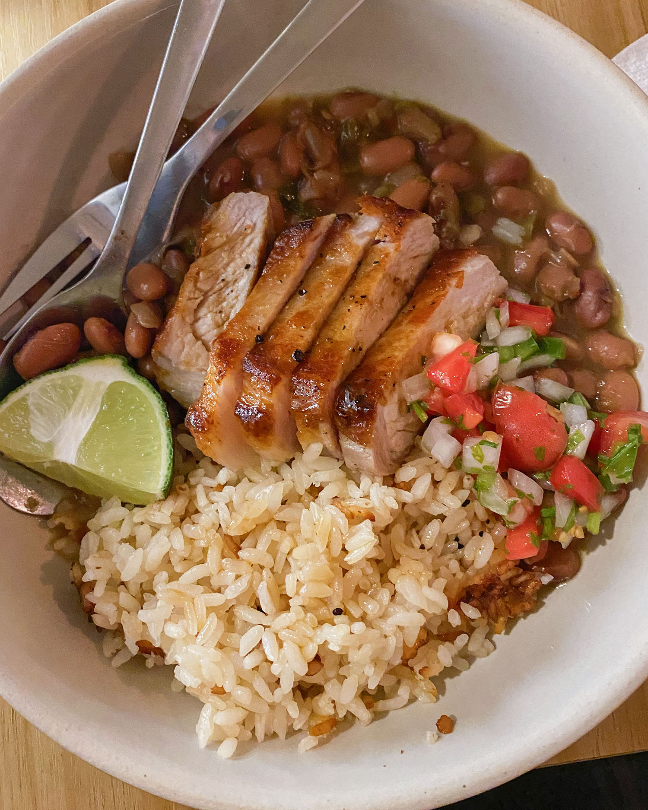

Pork & Beans
serves 2
up to 3 hrs for the beans, 20 minutes for the pork
Suyoung and I have been making these beans on cold, rainy days when we're hunkered down inside and have the time to nurse a pot on the stove. I recently learned (via Carla Lalli Music) about the magic of salting your beans while they soak. There's a popular myth that if you salt your beans before they're finished cooking they'll never become tender. However, this isn't the case! Better yet, if you salt them while they soak they come out so much better seasoned than if you had only salted them at the end.
No worries if you forget to soak your beans overnight- throwing them in some water in the morning and letting them sit for a few hours is usually good enough to get the ball rolling. If you're buying really fresh dried beans (my absolute favorite are Rancho Gordo) you might not even need to soak at all! But I agree with Carla in that it just makes a better pot overall. We like serving our beans with some fresh salsa on top, and a perfectly seared pork chop drizzled in a simple pan sauce.
Ingredients
- The Beans:
-
- 1/2 lb dried Pinto Beans
- 1 large white onion
- 1 green bell pepper
- 2 jalapeño peppers
- 1 tomato, quartered
- 2 dried smoked chipotle peppers
- 1 bay leaf
- 2 1” wide strips of lime peel
- A good fistful of cilantro, stems included
- Fresh lime juice, for finishing
- The Salsa:
-
- 1/4 cup chopped white onion
- 1/2 chopped fresh jalapeño
- 1 cup diced tomato
- 1/4 cup chopped cilantro
- 2 tbsp lime juice
- Salt
- The Rice:
-
- 1/2 cup white rice
- 1 cup chicken stock
- The Pork:
-
- 2 small/medium thick cut pork chops
- Salt & pepper
- 2 tbsp butter
- 1 tsp apple cider vinegar
- 1/4 cup chicken stock
Preparation
- Rinse your beans, and remove any debris that might be hanging out in them.
- Add beans to a large bowl or pot and cover with water, at least 2-3” above the beans. Add 2 tsp of salt and stir to combine. If soaking, cover and let sit (this can be anywhere between 3-4 hours, or overnight).
- The flavor base of our beans will be a sofrito. First, finely chop half of the white onion, saving the other half (unchopped). Finely chop the green bell pepper and jalapeños. You can remove the seeds from the jalapeño if it is too spicy for your taste.
- Set a heavy bottomed pot on the stove and bring it up to medium-low heat. Add some olive oil and the chopped onions and peppers. Season with salt and pepper, and cook gently until the sofrito is browned, about 20 minutes. There should be a nice amount of oil in the pan while cooking the sofrito. If it begins to look dry, add an extra teaspoon or two.
- Add the dried peppers and bay leaf and cook for a couple minutes, until aromatic and the peppers begin to release some of their oils.
- Add the beans and the water they soaked in (do not get rid of it!!) to the pot. Then, add half the remaining onion (no need to chop it), the tomato, garlic cloves, lime peels, and cilantro. Turn the heat up to high and bring to a boil. According to Steve Sando, of Rancho Gordo, it's important to show the beans who's in charge! Cook for 5 minutes, then turn the heat down to a simmer.
- Let the beans simmer until fully tender, anywhere from an hour and a half to two. Try not to stir them too frequently as this can break the delicate skins.
- Meanwhile, prepare the rest of your meal. Season the pork chops generously with salt and pepper and let sit covered in the refrigerator for at least an hour, or overnight. The longer they sit the juicer and more tender they will be.
- Cook 1/2 cup of white rice, using chicken stock as the cooking liquid.
- For the salsa, finely mince the last quarter of the onion, the tomato, jalapeño, and cilantro. Add to a bowl with the lime juice. Season with salt to taste and let sit until the beans are ready.
- It's time to see if the beans are done! A good way to know is by taking a spoonful and gently blowing on them. If the skins wrinkle away that usually means they are ready. Taste at least five beans. When they are nice and creamy inside they're all done. Remove the cilantro stems, bay leaf, onion, and any other vegetable remnants you can grab.
- Pork chop time. This next step is best done by your boyfriend who is not afraid of high heat like you are. Open all of your windows and turn on the stove fan. Bring a large skillet up to high heat. Add a tablespoon of neutral oil. When the oil is shimmering add the pork chops to the pan.
- Cook on each side until nicely browned and cooked through. I would tell you how long this takes but my boyfriend always does this step (sorry!!)
- Remove the pork from the pan and let rest on a cutting board.
- Turn the heat to low. Add the butter, chicken stock, and vinegar. Scrape up the browned pork bits from the pan and bring to a simmer. Cook until the sauce thickens and the flavors are balanced, a few minutes or so.
- Slice the pork chops, and plate them over a scoop of the rice, beans, and salsa. Finish with a squeeze of fresh lime juice.